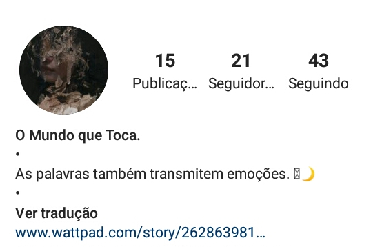
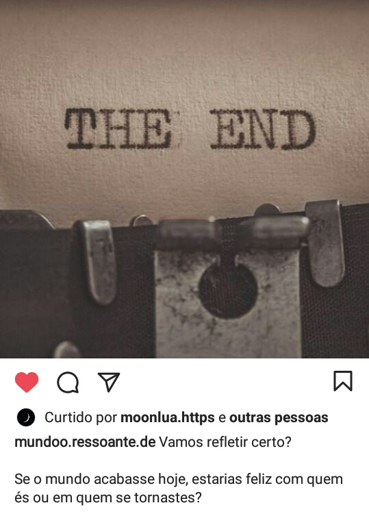

A garota invisível
Eu estava sem nada melhor para fazer, o dia estava um verdadeiro tédio, então o que melhor fazer se não ir ver o feed em uma situação assim? Eu estava vendo o que havia de interessante, quando me deparo que há uma nova pessoa me seguindo “ O mundo que toca”. Cheio de postagens a cerca de tristes pensamentos de assuntos variados, eu então comecei ler.
Algumas publicações contavam fragmentos de momentos tristes como o fim de um relacionamento, questionamentos sobre o que a personagem narradora sente ou a respeito de sua vida. Ao me deparar com esse conteúdo, penso logo em analisar o que é o perfil de fato.

A primeira publicação se chamava “Garota invisível”, que falava a respeito de mudanças na vida das pessoas com tempo no seu comportamento, e também falava de alguém oculto. Essa foi a primeira postagem e tinha mesmo o forte toque feminino no que se falava em texto, além de todas as outras ela ser mantido. Como este texto representa bastante o que são os demais, vou chamar a autora de garota invisível, pois ela soa perfeitamente com que autora se comporta, como alguém que sofre sozinha e que vê mais não é vista.

Na parte da bio do perfil, há um link que direciona para um livro chamado “Ego – um romance impossível” que é sobre o filho de um conde coreano que se apaixonou por uma camponesa que viu uma única vez. Pela leitura lembra muito o século 18, sem nada tecnológico, apenas a vida simples. Eu li os primeiros cinco capítulos e vi que não havia muita relação com as publicações do perfil, exceto algumas que correspondiam ao que realmente havia no livro, mas no geral, as publicações falavam do século 21 e coisas de jovens, não uma época medieval.

De volta ao perfil, oque explorar agora? Bom, há muitas pessoas sendo seguidas pela garota invisível, não? Haviam muitos e eles me davam um pouco de resposta. Um deles era um rapaz com seu rosto muito parecido com o de um coreano, outra que era desenhista e por fim, um perfil de músicas, além de pessoas comuns que seriam o público que leria as postagens e o livro. O rapaz idêntico a um coreano produz vídeos para o TikTok e nem preciso falar sobre o que não é? O perfil de desenhos era sobre fanarts de Naruto, bem feitas aliás, e as músicas eram lentas e tristes. Mas que público leria o Mundo que Toca e o livro?
Avaliando o livro por ser sobre um romance entre o filho do conde coreano e uma mulher que ele ama e só viu somente uma vez, se passando na Coreia e o protagonista fazer um sacrifício de sua riqueza por uma mulher que só tem evidências de sua existência por desenhos de seu rosto, até mesmo a mãe dele disse que esse amor seria impossível. Isso é uma fantasia, logo quem tem fanatismo por coreano? Exatamente, as ARMS, esse é o público-alvo.
Mas quanto ao perfil no instagram? Como já falei não há muita ligação com o livro. O Mundo que Toca nem apresenta forte influência de grupo das fãs de K-POP, envolve sim mas bem leve, há até mesmo presença do subcultura indie e resquícios da otaku também e presença de fé cristã também.

A garota iinvisível fala de seus sentimentos no Mundo que Toca, como na postagem a cima, no caso da pessoa intocável e inexistente, daí então a origem do livro, deste desejo: chegar-se a uma pessoa em tal patamar elevado seria como um romance com alguém simples, algo impossível , só que no romance a visão é da pessoa no alto patamar. A garota invisível é uma jovem do século 21 e também tem gostos os quais ela acha afastar garotos.

Contemporânea, indie, ARM com tristes reflexões a cerca de sua vida, está é a garota invisível. O romance foi escrito por uma garota e para garotas, como ela disse acima, seu gosto pode afastar garotos por achá-la estranha e esse fanatismo não é muito compartilhado no geral com garotos a cerca do K-POP, que é publico alvo deste livro.
O Mundo Ressoante da garota invisível é sobre ela mesma, onde está suas reflexões e sentimentos, gosta ou sente. O seu mundo não é unicamente sobre aquele gênero musical K-POP, não é algo amador, é algo muito bem feito. O livro está muito bem escrito e revisado, assim como os do seu mundo. O seu mundo é escuro, o que chega ao seu ponto, uma jovem escritora contemporânea, essa é garota invisível escrevendo no seu mundo e em seu livro.
